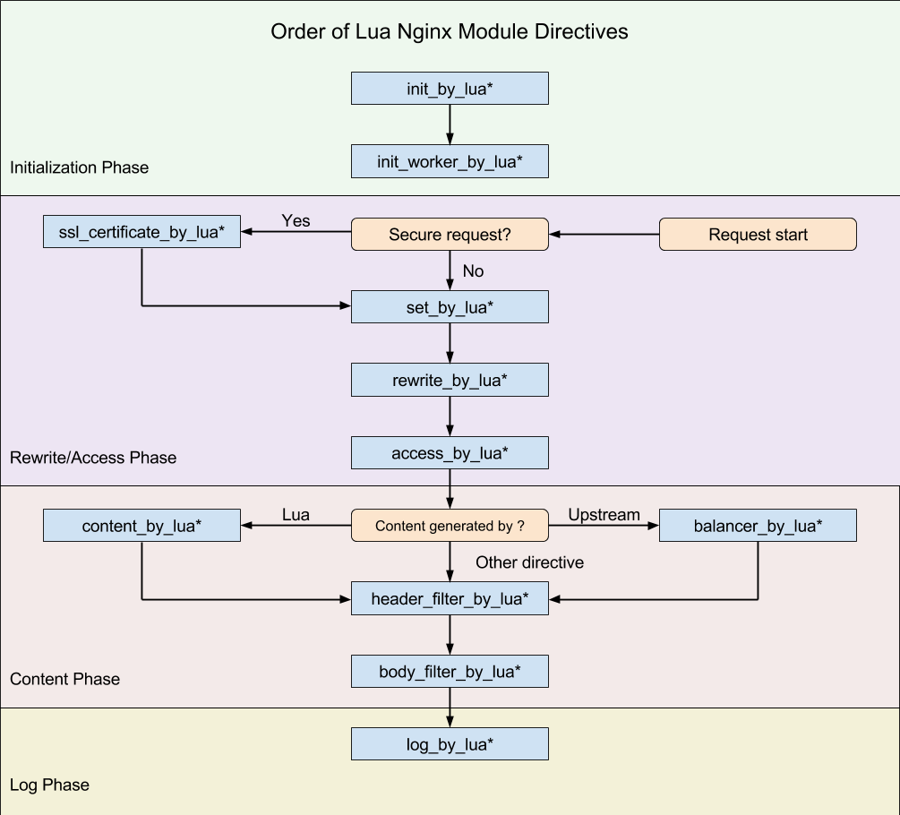
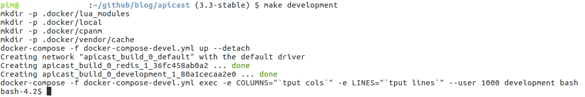
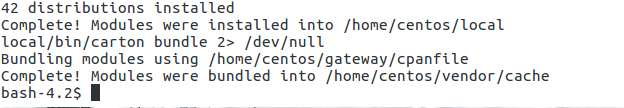
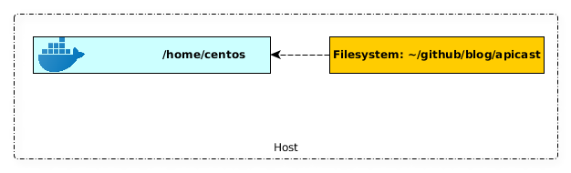

3scale policy development - part 1 setting up a development environment
3scale policy development - part 1 setting up a development environment
In this multi part blog series we are going to dive into the development, testing and deployment of a custom 3scale APIcast policy. In this initial part we are going to setup a development environment so we can actually start the development of our policy.
But before we begin, let’s first take a look what a 3scale APIcast policy is. We are not going into too much detail here, since better and more detailed descriptions about 3scale APIcast policies already exist.
For those unfamiliar 3scale is a full API Management solution of Red Hat. It exists of an API Manager used for account management, analytics and overall configuration. A developer portal used for outside developers for gaining access to API’s and viewing the documentation. And the API gateway named APIcast. The APIcast gateway is based on Nginx and more specifically Openresty, which is a distribution of Nginx compiled with various modules, most notable the lua-nginx-module.
The lua-nginx-module provides the ability to enhance a Nginx server by executing scripts using the Lua programming language. This is done by providing a Lua hook for each of the Nginx phases. Nginx works using an event loop and a state model where every request (as well as the starting of the server and its worker processes) goes through various phases. Each phase can execute a specific Lua function.
An overview of the various phases and corresponding Lua hooks was kindly in the README of the lua-nginx-module: https://github.com/openresty/lua-nginx-module#directives

Since the APIcast gateway uses Openresty 3scale provided a way to leverage these Lua hooks in the Nginx server using something called policies. As described in the APIcast README:
“The behaviour of APIcast is customizable via policies. A policy basically tells APIcast what it should do in each of the nginx phases.”
A detailed explanation of policies can be found in the same README: https://github.com/3scale/apicast/blob/master/doc/policies.md
Setting up the development enviroment
As was clear from the introduction, APIcast policies are created in the Lua programming language. So we need to setup an environment to do some Lua programming. Also, an actual APIcast server would be very nice to perform some local tests.
Luckily the guys from 3scale made it very easy to setup a development environment for APIcast using Docker and Docker Compose.
Pre-requisites:
This means both Docker and Docker compose must be installed.
The version of Docker I currently use is:
Docker version 18.09.2, build 6247962
Instructions for installing Docker can be found on the Docker website.
With Docker compose version:
docker-compose version 1.23.1, build b02f1306
Instructions for installing Docker-compose can also be found on the Docker website.
Setting up the APIcast development image:
Now that we have both Docker and Docker-compose installed we an setup the APIcast development image.
Firstly the APIcast git repostitory must be cloned so we can start the development of our policy. Since we are going to base our policy on the latest 3scale release we are switching to the stable branch of APIcast.
$ git clone https://github.com/3scale/apicast.git
when done switch to a stable branch, I am using 3.3
$ cd apicast/
$ git checkout 3.3-stable
To start the APIcast containers using Docker-compose we can use the Make file provided by 3scale. In the APIcast directory simply execute the command:
make development

The Docker container starts in the foreground with a bash session. The first thing we need to do inside the container is installing all the dependencies.
This can also be done using a Make command, which again must be issued inside the container.
make dependencies
It will now download and install a plethora of dependencies inside the container.
The output will be very long, but if everything went well you should be greeted with an output that looks something like this:

Now as a final verification we can run some APIcast unit tests to see if we are up and running and ready to start the development of our policy.
To run the Lua unit tests run the following command inside the container:
make busted

Now that we can successfully run unit tests we can start our policy development!
The project’s source code will be available in the container and sync’ed with your local apicast directory, so you can edit files in your preferred environment and still be able to run whatever you need inside the Docker container.
The development container for APIcast uses a Docker volume mount to mount the local apicast directory inside the container. This means all files changed locally in the repository are synced with the container and used in the tests and runtime of the development container.

It also means you can use your favorite IDE or editor develop your 3scale policy.
Optional setup an IDE for policy development:
The use of an IDE or text editor and more specifically which one is very personal so there is definitely no one size fits all here. But for those looking for a dedicated Lua IDE ZeroBraneStudio is a good choice.
Since I come from a Java background I am very used to working with IntelliJ IDEA, and luckily there are some plugins available that make Lua development a little bit nicer.
These are the plugins I installed for developing Lua code and 3scale policies in particular:
 And for Openresty/Nginx there is also a plugin:
And for Openresty/Nginx there is also a plugin:

As a final step, but this is more relevant if you are also planning on developing some Openresty based applications locally (outside the APIcast development container), you can install Openresty, based on the instructions on their website.
What I did was I linked the Lua runtime engine of Openresty, which is LuaJIT, to the SDK of my IntelliJ IDEA so that I am developing code against the LuaJIT engine of Openresty.
 As I already mentioned these steps are not required for developing policies in APIcast, and you definitely do not need to use IntelliJ IDEA. But having a good IDE or Text editor, whatever your choice, can make your development life a little bit easier.
As I already mentioned these steps are not required for developing policies in APIcast, and you definitely do not need to use IntelliJ IDEA. But having a good IDE or Text editor, whatever your choice, can make your development life a little bit easier.
Now we are ready to create a 3scale APIcast policy, which is the subject of the next part!